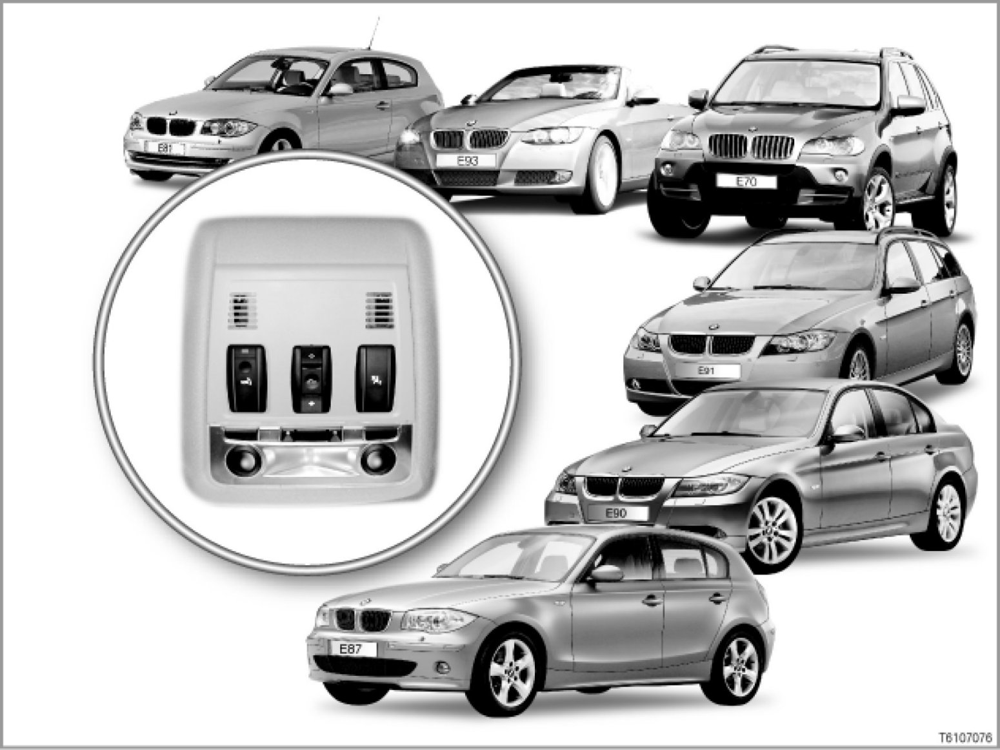

Introduction
61 02 04 (091)
Roof control panel
E70, E81, E87, E90, E91, E92, E93

Introduction
Prior to the introduction of the roof control panel, the wiring in the roof was extremely complex.
Individual lines were required for the following functions:
- Interior lighting (front and rear)
- Sliding/tilting sunroof
- Anti-theft alarm system
- Lighting for make-up mirrors
- Electrochromic interior mirror with connection for electrochromic exterior mirrors
- Rain-light sensor or rain-light solar sensor
- Condensation sensor
Both basic and High variants of the roof control panel are available.
The High variant of the roof control panel is fitted in conjunction with specific optional equipment:e.g. sliding/tilting sunroof or with option 563 "Lighting kit".
The roof control panel optimises the wiring in the roof as follows:
- The roof control panel is the interface for the wiring in the roof.
- The roof control panel also features other components, depending on the equipment fitted and the national version:
- Sliding/tilting sunroof switch
- Emergency call button
- Microphone
- Indicator lamp for front-passenger airbag deactivation
- Ultrasonic interior motion sensor (E70 only)
This summary of wires and components in the roof control panel optimises the previous construction.
> E81, E87, E90, E91, E92, E93
[system overview ...]
> E70
[system overview ...]
Notes for service staff
The following information is available for service staff:
- General note: ---
- Diagnosis:
- Encoding/programming:
Japanese national version
The roof control panel creates the earth connection for the interior mirror with electronic toll function.
Subject to change.